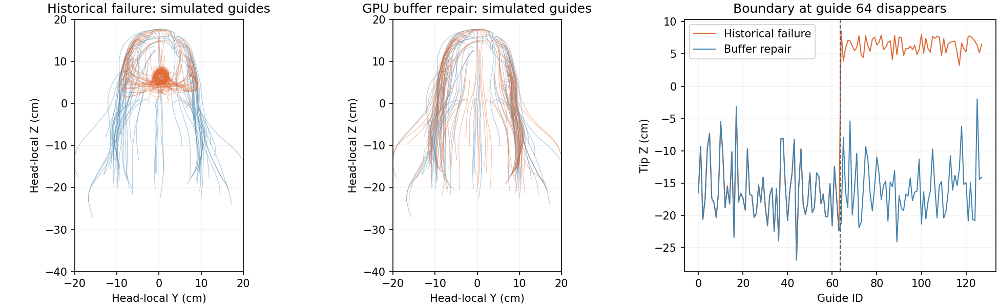

头发 GPU 数据链路修复
先看结果
波浪发头后方的大束团已消失。 错误首先发生在模拟导线层，最终发丝随后跟着错误导线卷起来。本轮修复了 GPU 约束数据传输，并保留了原始造型、源支撑值、发束连接、身体碰撞与精细档参数。
四种普通 BP_VamCharacter 资产都完成了独立重载、Editor 的两次 GPU 读回及完整 PIE 运动。头发自碰撞仍为零；发髻支撑和侧发自由度仍分开保留。这不是宣称所有发型的物理质感已经完美，剩余边界见末节。
左侧：此前保存的问题版本。右侧：本轮实际 PIE。均沿用相同 M 身体、实际头骨矩阵、环绕相机和固定灯光脚本；旧侧为历史录制，不冒充本轮重录，不能据此作像素误差或性能加速比较。0–8 秒沉降，8–16 秒摆头，之后停止恢复。本轮没有录走跑跳。
根因证据与实际改动
历史 GPU 读回显示：128 条导线中，0–63 号基本正常，64–127 号卷回头后方。源 rest 数据与实际导线对应，没有发现这 128 条导线被重排；这个波浪资源没有有效发束连接，因此不能解释为“连接过多”。纯 UE Rods 的独立短测也没有出现该束团。
进一步重新加载旧资产时，实际 GPU 编译明确失败：4099 个可索引常量，硬上限 4096，X4600。两个常量表消融版本同样超限。旧验证器只看进程退出与截图存在，未把 Niagara 以 Warning 打印的 shader error 判为失败；现已修正。
确定的工程缺陷是：把大批逐点物理数据写进有容量上限的 HLSL 常量数组。现在改用 UE 原生 Niagara Array Float4 的 GPU 缓冲区，按节点索引读取支撑、碰撞半径和连接。没有修改对应数值，也没有关闭碰撞。空连接表经过验证后不执行连接求解。

图来自真实 GPU 导线读回，不是示意角色截图。发梢位于头部原点上方的异常导线数由 64 / 128 变为 0 / 128。前 64 条导线的首帧位置变化 RMS 仅 0.066 cm，后 64 条为 15.877 cm；这是修改前后位移，不是相对于 VaM 真值的误差。
证据已定位到模拟输出与数据传输／编译路径；没有进一步证明历史缓存里“第 64 条分界”对应哪条驱动或编译器指令，因此不把它写成已证实的显卡驱动缺陷。旧资产本轮重录因 X4600 被拦截，失败记录完整保留。
长发、马尾、发髻回归
直长发
高马尾
发髻＋侧发
三个视频左侧也是历史基线，右侧为本轮录制。马尾发际组基本贴头，尾束仍能独立运动；发髻保留内部支撑，旁边散发继续摆动。每种发型的源曲线、逐点刚性、连接与半径 JSON 数据完全相同，不按发型名称写补丁。
| 发型 / 发组 | 运动段发梢最大位移 cm | 导线长度比 P95 / Max | 头 / 身体代理深度 Max cm |
|---|---|---|---|
| 波浪长发 G0 | 27.819 | 1.009 / 1.030 | 0.000 / 0.000 |
| 直长发 G0 | 0.351 | 1.040 / 1.107 | 0.000 / 0.000 |
| 直长发 G1 | 1.741 | 1.005 / 1.005 | 0.000 / 0.000 |
| 直长发 G2 | 31.734 | 1.004 / 1.067 | 0.000 / 0.000 |
| 直长发 G3 | 2.639 | 1.017 / 1.020 | 0.000 / 0.000 |
| 直长发 G4 | 0.924 | 1.091 / 1.098 | 0.000 / 0.000 |
| 高马尾 G0 | 4.803 | 1.051 / 1.076 | 0.000 / 0.000 |
| 高马尾 G1 | 0.031 | 1.010 / 1.016 | 0.577 / 0.000 |
| 高马尾 G2 | 10.896 | 1.002 / 1.016 | 0.412 / 0.000 |
| 发髻＋侧发 G0 | 0.273 | 1.013 / 1.032 | 1.237 / 2.697 |
| 发髻＋侧发 G1 | 5.504 | 1.038 / 1.048 | 0.000 / 0.000 |
| 发髻＋侧发 G2 | 1.881 | 1.029 / 1.038 | 0.000 / 0.000 |
| 发髻＋侧发 G3 | 0.440 | 0.995 / 0.999 | 4.856 / 0.000 |
这些是 GPU 导线指标。代理深度来自简化头部／身体碰撞体，不等同于可见发丝穿入真实皮肤。发髻支撑组在导入时存在内嵌路径，相应非零深度没有被隐藏；它们需要结合源造型和最终画面判断。长度比仍有局部超过 1 的情况，不能用表格宣布所有约束已经理想。
原生单导线与多导线插值
左：修复后的单导线插值。右：同一模拟、同一资源的原生多导线插值。此次两边都为本轮 PIE 录制；重新加载 Groom 后检查了实际 Use Unique Guide 分别为 true / false。没有修改导线数、碰撞或材料参数。
多导线版本没有显示出足以替代默认路径的明显外形优势，因此默认保留单导线。该独立候选可供继续视觉比较，不能把换插值当成波浪发成团的根因修复。
性能与验证
单角色空场景、1920×1080、臀腿 Jiggle 开启、Contact 关闭。每阶段预热 180 帧，测量 300 帧，顺序为关闭头发→精细→关闭头发。测量时没有录像、同步 GPU 几何读回或其他本任务 UE 测试并行运行。
| 发型 | 整帧均值 ms / FPS | P95 ms | 头发增量 ms | 关闭基线漂移 ms |
|---|---|---|---|---|
| 波浪长发 | 5.103 / 196.0 | 6.520 | 1.589 | +0.266 |
| 直长发 | 5.332 / 187.5 | 6.527 | 1.785 | -0.300 |
| 高马尾 | 5.074 / 197.1 | 6.389 | 1.203 | +0.604 |
| 发髻＋侧发 | 5.549 / 180.2 | 7.088 | 1.919 | +0.411 |
头发增量包括渲染＋模拟，不是独立求解器计时；这是单次差分，已列出关闭基线漂移。整帧 FPS 仅属于这个空场景，不能当作完整游戏 FPS。多导线波浪发整帧为 5.589 ms，头发增量 2.130 ms；单次结果不足以得出精确的插值性能比。
- UE C++ 构建通过；最新编译记录为 compile-04.log。
- 42 项现有及新增 Python 回归通过。
- 四种独立资产重新加载通过；实际骨骼矩阵重放全部 PASS。
- 四种普通角色的 Editor GPU 读回通过，PIE 全序列完成，所有新版 shader 检查通过。
- Editor 全发组读回曾读到被裁剪发组的未初始化渲染缓冲；审计会话关闭视锥插值裁剪后重新通过。该设置仅用于审计，不进入生产与性能测量。
- 保留了消融编译失败、旧版重录失败、DLL 占用导致的首次链接失败及 Editor 读回失败，未将失败运行算作通过。
| 发型 | 完整 PIE 帧数 | Editor GPU / 骨骼重放 | 资产身份 |
|---|---|---|---|
| 波浪长发 | 719 | passed / PASS | 5432ebfcb98117a5 |
| 直长发 | 720 | passed / PASS | 0cf7fa0e1bd6cb09 |
| 高马尾 | 719 | passed / PASS | 4f94bf36f893da9c |
| 发髻＋侧发 | 719 | passed / PASS | dd9116abae9cd11d |
使用与后续边界
使用各行 bundle 中的 blueprint 或 configuration 路径加载角色。每个角色都是正常 BP_VamCharacter，身体继续引用 M 基线。新的发型生成流程使用 GPU 数组资源；历史 baked 资产不会因只更新 DLL 自动变成新资产。
本轮明确修好了可重现的波浪发成团和约束数据表编译超限，并完成四发型保持性回归。仍需继续处理：
- 部分局部长度变化、发束同步感和空气阻力响应，与 VaM 的动态语义尚不完全等价。
- 本轮没有扩大源控制网预算，也没有完成所有多束扎发结构的重建；双马尾的历史异常尚未纳入本轮验收。
- 没有重新采样四款发型各自的 VaM 动态；使用的是已有骨骼运动参考，不能声称完成逐发丝 VaM / UE 动态一致性验证。
- 最终发丝碰撞不能只凭导线代理的零侵入保证；本轮视频和局部检查保留供视觉验收。